Candidate List 20260425 Previous Day Next Day Section 1: New Sources (age<1d) Cosmological Afterglow
Section 2: Old (1-5d) sources observed last night placeholder
Section 1: New Afterglow/FBOT Cands Last Night (1)
1. ZTF26aaugfuu (Afterglow?) [Back to Top] [Share] [Trigger Swift] [Fritz ] [Lasair ]RA, Dec: 185.63711, 1.23862 12h22m32.91s, 1d14m19.03sGalactic (l, b): 286.74576, 63.19888 WARNING: 3.38 deg from ecliptic plane ext(g-r) = 0.022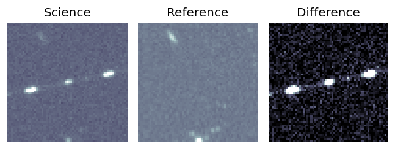
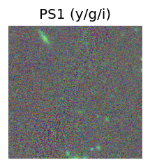
LegacySurvey: 1 sources in 3 arcsec Closest: d = 9.37 arcsec, 191.7 deg (east of north) photoz=0.82 (68% bounds 0.72, 0.92), type=REX peak abs mag = -24.35 (68% bounds -24.02, -24.66) 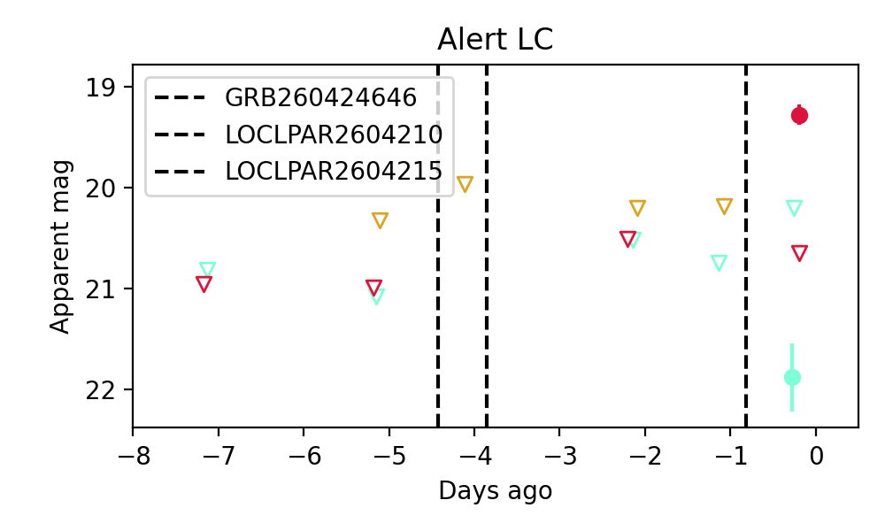
Consistent with synchrotron, g-r>0!
Section 2: Older Sources Observed Last Night (23)
0. ZTF26aatgpuf (Afterglow?) [Back to Top] [Share] [Trigger Swift] [Fritz ] [Lasair ]RA, Dec: 294.98281, 11.11335 19h39m55.87s, 11d 6m48.05sGalactic (l, b): 48.40192, -5.48103 ext(g-r) = 0.568PS1: 1 source in 3 arcsec Closest: d = 3.17 arcsec photoz=0.64+/-0.09 peak abs mag = -27.14
1. ZTF26aatktdb (FBOT?) [Back to Top] [Share] [Trigger Swift] [Fritz ] [Lasair ]RA, Dec: 186.14751, 7.72807 12h24m35.40s, 7d43m41.04sGalactic (l, b): 283.5422, 69.58279 ext(g-r) = 0.024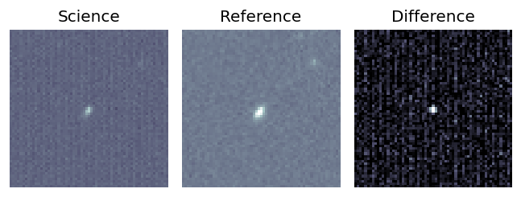
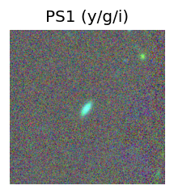
peak abs mag = -20.26 LegacySurvey: 1 sources in 3 arcsec Closest: d = 1.25 arcsec, 149.9 deg (east of north) photoz=0.1 (68% bounds 0.08, 0.12), type=SER peak abs mag = -19.29 (68% bounds -18.82, -19.77) 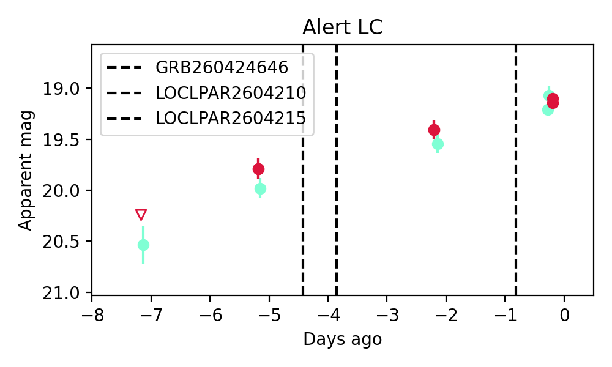
Consistent with synchrotron, g-r>0!
2. ZTF26aatljht (Afterglow?) [Back to Top] [Share] [Trigger Swift] [Fritz ] [Lasair ]RA, Dec: 152.72274, 45.94791 10h10m53.46s, 45d56m52.48sGalactic (l, b): 171.38087, 53.20769 ext(g-r) = 0.012LegacySurvey: 1 sources in 3 arcsec Closest: d = 6.45 arcsec, 196.4 deg (east of north) photoz=0.03 (68% bounds 0.01, 0.05), type=PSF peak abs mag = -16.54 (68% bounds -13.33, -17.68) Consistent with synchrotron, g-r>0!
3. ZTF26aatlolu (FBOT?) [Back to Top] [Share] [Trigger Swift] [Fritz ] [Lasair ]RA, Dec: 210.2546, 5.44151 14h 1m1.10s, 5d26m29.43sGalactic (l, b): 343.40657, 62.71017 ext(g-r) = 0.031peak abs mag = -20.81 peak abs mag = -20.90 LegacySurvey: 1 sources in 3 arcsec Closest: d = 1.35 arcsec, 154.5 deg (east of north) photoz=0.06 (68% bounds 0.04, 0.18), type=SER peak abs mag = -18.48 (68% bounds -17.22, -20.89)
4. ZTF26aatloyt (Afterglow?) [Back to Top] [Share] [Trigger Swift] [Fritz ] [Lasair ]RA, Dec: 212.81829, -3.52066 14h11m16.39s, -3d-31m-14.37sGalactic (l, b): 338.16174, 53.79937 ext(g-r) = 0.067LegacySurvey: 1 sources in 3 arcsec Closest: d = 1.23 arcsec, 269.8 deg (east of north) photoz=0.07 (68% bounds 0.06, 0.09), type=SER peak abs mag = -18.66 (68% bounds -18.21, -19.19)
5. ZTF26aatlrma (Afterglow?) [Back to Top] [Share] [Trigger Swift] [Fritz ] [Lasair ]RA, Dec: 208.79768, 21.32642 13h55m11.44s, 21d19m35.12sGalactic (l, b): 14.59903, 74.36703 ext(g-r) = 0.028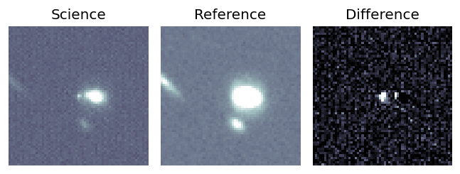
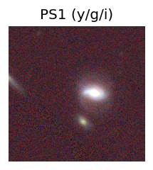
peak abs mag = -16.52 LegacySurvey: 1 sources in 3 arcsec Closest: d = 7.33 arcsec, 269.8 deg (east of north) photoz=0.03 (68% bounds 0.03, 0.03), type=SER peak abs mag = -16.78 (68% bounds -16.53, -17.06) 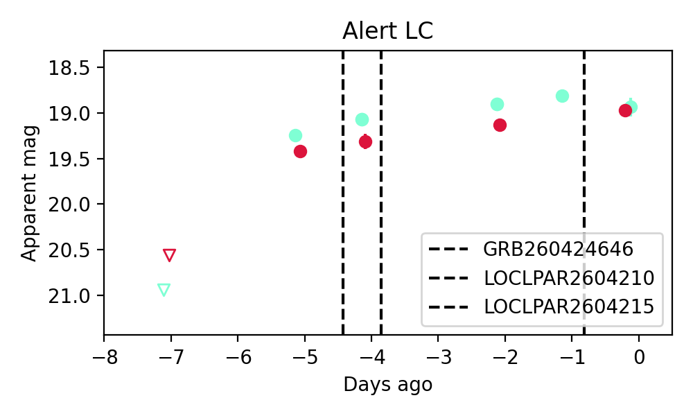
Consistent with synchrotron, g-r>0!
6. ZTF26aatpmfa (FBOT?) [Back to Top] [Share] [Trigger Swift] [Fritz ] [Lasair ]RA, Dec: 216.71608, 60.40887 14h26m51.86s, 60d24m31.93sGalactic (l, b): 103.55857, 52.98176 ext(g-r) = 0.013peak abs mag = -24.89 LegacySurvey: 1 sources in 3 arcsec Closest: d = 0.23 arcsec, 351.1 deg (east of north) photoz=0.86 (68% bounds 0.53, 1.15), type=REX peak abs mag = -25.73 (68% bounds -24.45, -26.51)
7. ZTF26aatqczh (Afterglow?) [Back to Top] [Share] [Trigger Swift] [Fritz ] [Lasair ]RA, Dec: 334.9169, 15.73396 22h19m40.06s, 15d44m2.27sGalactic (l, b): 77.71979, -33.49891 ext(g-r) = 0.056peak abs mag = -18.86 LegacySurvey: 1 sources in 3 arcsec Closest: d = 1.95 arcsec, 18.8 deg (east of north) photoz=0.06 (68% bounds 0.04, 0.09), type=EXP peak abs mag = -18.71 (68% bounds -17.59, -19.54)
8. ZTF26aattcrm (FBOT?) [Back to Top] [Share] [Trigger Swift] [Fritz ] [Lasair ]RA, Dec: 211.62989, 25.68781 14h 6m31.17s, 25d41m16.10sGalactic (l, b): 32.28319, 73.1424 ext(g-r) = 0.015peak abs mag = -19.59 LegacySurvey: 1 sources in 3 arcsec Closest: d = 1.01 arcsec, 65.1 deg (east of north) photoz=0.12 (68% bounds 0.09, 0.14), type=SER peak abs mag = -19.45 (68% bounds -18.61, -19.82)
9. ZTF26aatwqsc (Afterglow?) [Back to Top] [Share] [Trigger Swift] [Fritz ] [Lasair ]RA, Dec: 217.7016, 26.39787 14h30m48.39s, 26d23m52.34sGalactic (l, b): 36.73971, 67.84303 ext(g-r) = 0.02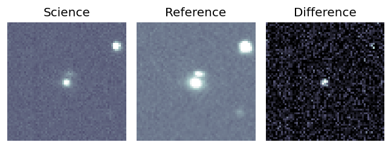
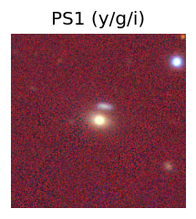
peak abs mag = -18.89 LegacySurvey: 1 sources in 3 arcsec Closest: d = 0.23 arcsec, 222.4 deg (east of north) photoz=0.11 (68% bounds 0.1, 0.12), type=SER peak abs mag = -19.07 (68% bounds -18.85, -19.18) 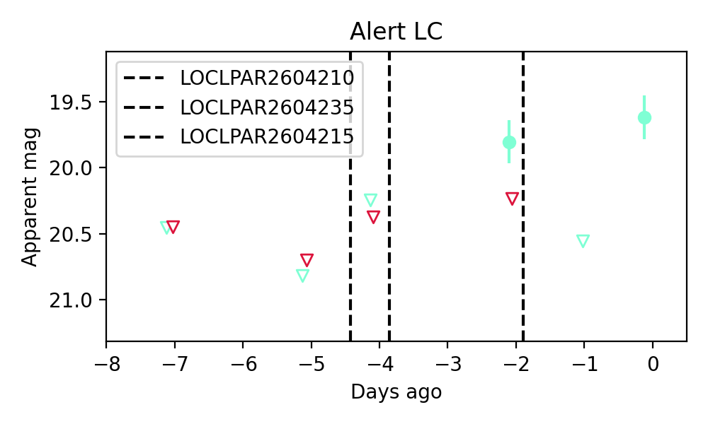
10. ZTF26aatyciy (Afterglow?) [Back to Top] [Share] [Trigger Swift] [Fritz ] [Lasair ]RA, Dec: 229.76293, 4.33668 15h19m3.10s, 4d20m12.06sGalactic (l, b): 6.60393, 48.08359 ext(g-r) = 0.052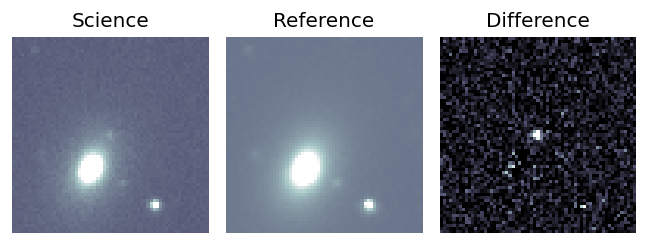
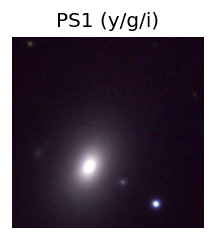
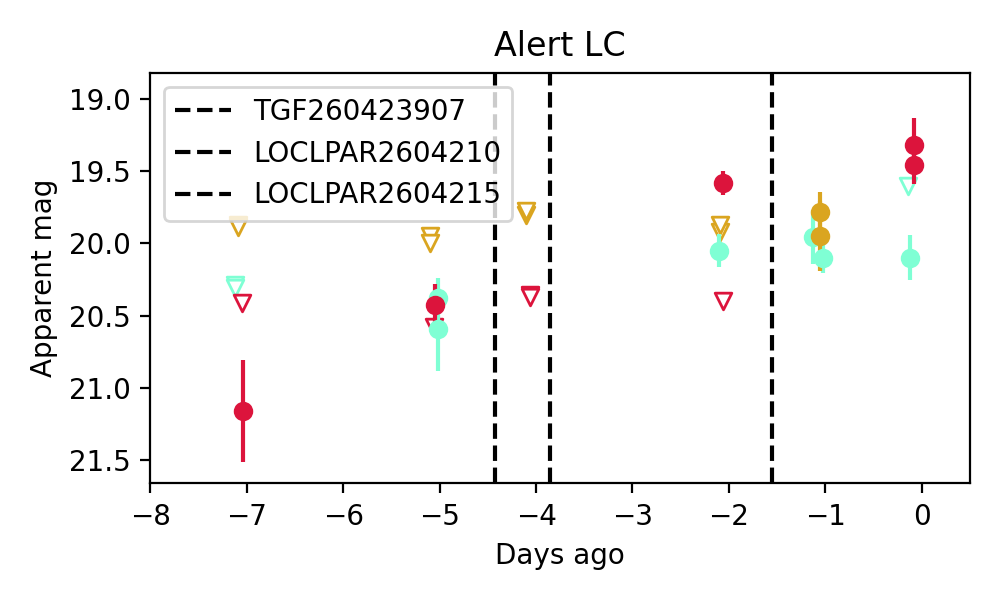
Consistent with synchrotron, g-r>0!
11. ZTF26aatyhtp (FBOT?) [Back to Top] [Share] [Trigger Swift] [Fritz ] [Lasair ]RA, Dec: 260.46488, 31.10619 17h21m51.57s, 31d 6m22.29sGalactic (l, b): 54.38264, 31.72811 ext(g-r) = 0.034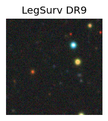
LegacySurvey: 1 sources in 3 arcsec Closest: d = 0.23 arcsec, 13.5 deg (east of north) photoz=1.12 (68% bounds 0.33, 1.71), type=REX peak abs mag = -25.0 (68% bounds -21.83, -26.14)
12. ZTF26aatyhvw (FBOT?) [Back to Top] [Share] [Trigger Swift] [Fritz ] [Lasair ]RA, Dec: 260.80897, 35.99874 17h23m14.15s, 35d59m55.47sGalactic (l, b): 60.0859, 32.56987 ext(g-r) = 0.045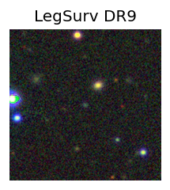
peak abs mag = -23.25 LegacySurvey: 1 sources in 3 arcsec Closest: d = 0.25 arcsec, 170.9 deg (east of north) photoz=0.14 (68% bounds 0.07, 0.48), type=REX peak abs mag = -19.72 (68% bounds -18.17, -22.76)
13. ZTF26aatzrft (Afterglow?) [Back to Top] [Share] [Trigger Swift] [Fritz ] [Lasair ]RA, Dec: 163.1522, 22.93168 10h52m36.53s, 22d55m54.04sGalactic (l, b): 215.18846, 62.82187 ext(g-r) = 0.02LegacySurvey: 1 sources in 3 arcsec Closest: d = 6.46 arcsec, 4.9 deg (east of north) photoz=0.01 (68% bounds 0.01, 0.02), type=PSF peak abs mag = -16.02 (68% bounds -14.88, -17.27) Consistent with synchrotron, g-r>0!
14. ZTF26aaubove (Afterglow?) [Back to Top] [Share] [Trigger Swift] [Fritz ] [Lasair ]RA, Dec: 224.50446, 5.46301 14h58m1.07s, 5d27m46.83sGalactic (l, b): 2.91879, 52.90439 ext(g-r) = 0.044peak abs mag = -19.07 LegacySurvey: 1 sources in 3 arcsec Closest: d = 0.63 arcsec, 30.0 deg (east of north) photoz=0.04 (68% bounds 0.02, 0.15), type=PSF peak abs mag = -17.11 (68% bounds -15.23, -20.2) Consistent with synchrotron, g-r>0!
15. ZTF26aaudrvy (Afterglow?) [Back to Top] [Share] [Trigger Swift] [Fritz ] [Lasair ]RA, Dec: 251.68914, 49.04142 16h46m45.39s, 49d 2m29.10sGalactic (l, b): 75.62271, 40.26393 ext(g-r) = 0.024peak abs mag = -19.02 LegacySurvey: 1 sources in 3 arcsec Closest: d = 0.71 arcsec, 203.8 deg (east of north) photoz=0.09 (68% bounds 0.06, 0.11), type=SER peak abs mag = -19.0 (68% bounds -17.99, -19.45) Consistent with synchrotron, g-r>0!
16. ZTF26aaudvop (Afterglow?) [Back to Top] [Share] [Trigger Swift] [Fritz ] [Lasair ]RA, Dec: 274.96389, 10.19719 18h19m51.33s, 10d11m49.87sGalactic (l, b): 38.55083, 11.59841 ext(g-r) = 0.218PS1: 1 source in 3 arcsec Closest: d = 7.93 arcsec photoz=0.68+/-0.33 peak abs mag = -23.83 Consistent with synchrotron, g-r>0!
17. ZTF26aauefkg (Afterglow?) [Back to Top] [Share] [Trigger Swift] [Fritz ] [Lasair ]RA, Dec: 1.70751, 38.17716 0h 6m49.80s, 38d10m37.76sGalactic (l, b): 113.36175, -23.86423 ext(g-r) = 0.102
18. ZTF26aauenuj (FBOT?) [Back to Top] [Share] [Trigger Swift] [Fritz ] [Lasair ]RA, Dec: 182.28394, 8.00509 12h 9m8.14s, 8d 0m18.31sGalactic (l, b): 273.33222, 68.41087 ext(g-r) = 0.018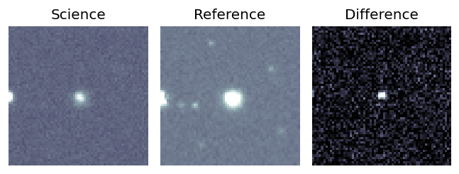
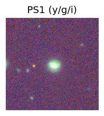
peak abs mag = -19.68 LegacySurvey: 1 sources in 3 arcsec Closest: d = 0.82 arcsec, 118.2 deg (east of north) photoz=0.3 (68% bounds 0.14, 0.48), type=SER peak abs mag = -21.35 (68% bounds -19.5, -22.58) 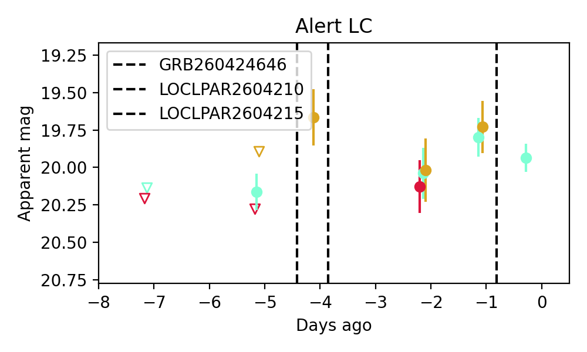
Consistent with synchrotron, g-r>0!
19. ZTF26aauepyh (Afterglow?) [Back to Top] [Share] [Trigger Swift] [Fritz ] [Lasair ]RA, Dec: 172.86237, 26.79077 11h31m26.97s, 26d47m26.76sGalactic (l, b): 209.43578, 72.19165 ext(g-r) = 0.02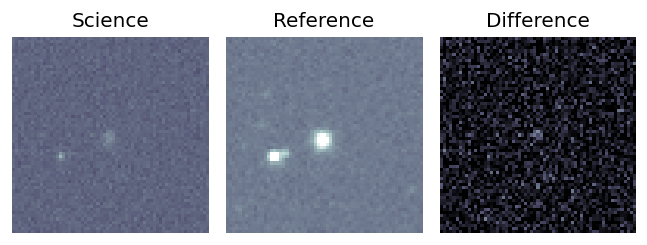
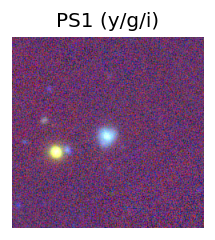
peak abs mag = -19.11 LegacySurvey: 1 sources in 3 arcsec Closest: d = 1.82 arcsec, 167.7 deg (east of north) photoz=0.12 (68% bounds 0.11, 0.13), type=REX peak abs mag = -19.02 (68% bounds -18.73, -19.2) 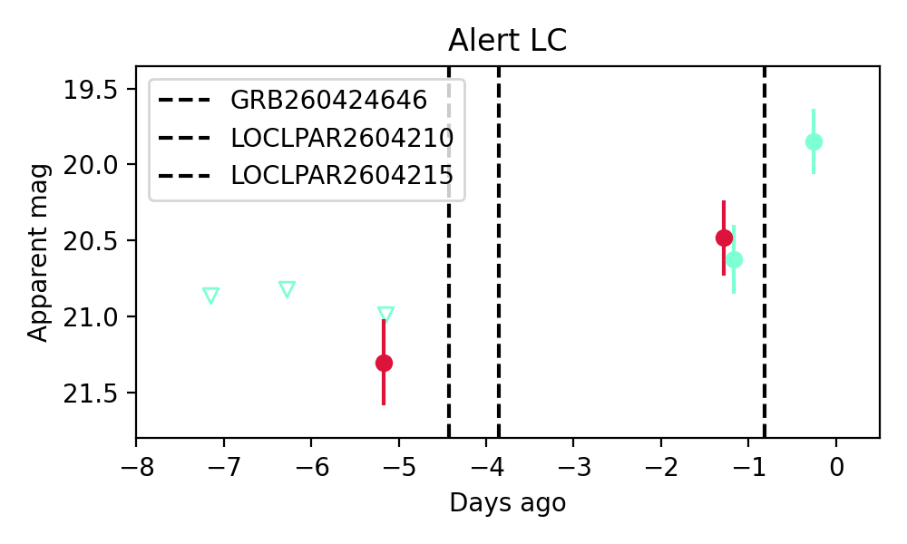
Consistent with synchrotron, g-r>0!
20. ZTF26aaueyzs (FBOT?) [Back to Top] [Share] [Trigger Swift] [Fritz ] [Lasair ]RA, Dec: 184.36335, -27.07365 12h17m27.20s, -27d-4m-25.12sGalactic (l, b): 293.66907, 35.18611 ext(g-r) = 0.076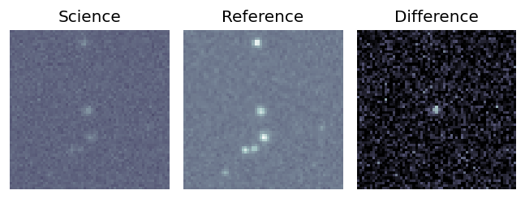
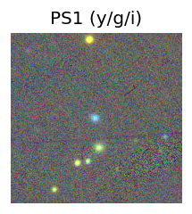
PS1: 1 source in 3 arcsec Closest: d = 0.75 arcsec photoz=0.17+/-0.06 peak abs mag = -20.50 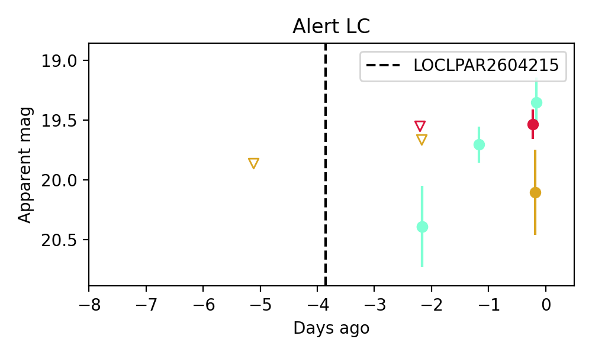
21. ZTF26aaugzrw (Afterglow?) [Back to Top] [Share] [Trigger Swift] [Fritz ] [Lasair ]RA, Dec: 243.43728, 58.98594 16h13m44.95s, 58d59m9.37sGalactic (l, b): 89.95997, 43.00007 ext(g-r) = 0.014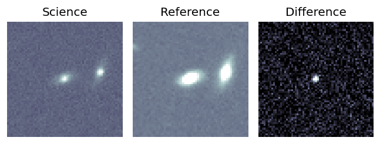
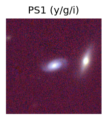
peak abs mag = -18.31 LegacySurvey: 1 sources in 3 arcsec Closest: d = 0.27 arcsec, 255.9 deg (east of north) photoz=0.07 (68% bounds 0.05, 0.09), type=SER peak abs mag = -18.41 (68% bounds -17.74, -18.85) 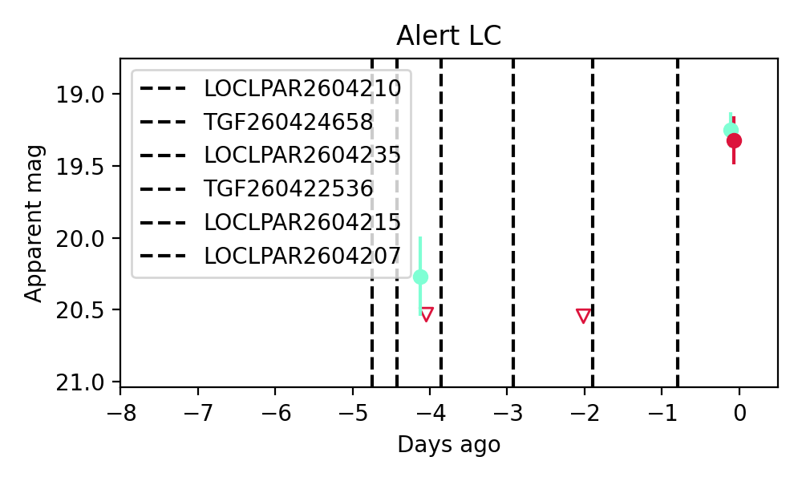
Consistent with synchrotron, g-r>0!
22. ZTF26aaugzze (Afterglow?) [Back to Top] [Share] [Trigger Swift] [Fritz ] [Lasair ]RA, Dec: 235.52777, 22.9046 15h42m6.67s, 22d54m16.55sGalactic (l, b): 36.37267, 51.28534 ext(g-r) = 0.058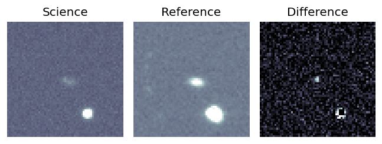
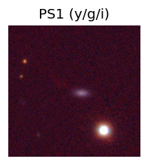
peak abs mag = -18.36 LegacySurvey: 1 sources in 3 arcsec Closest: d = 3.36 arcsec, 246.3 deg (east of north) photoz=0.09 (68% bounds 0.08, 0.11), type=SER peak abs mag = -18.1 (68% bounds -17.77, -18.49) 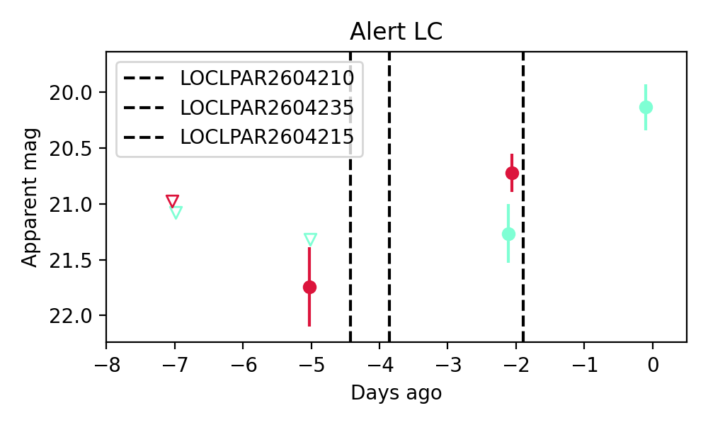
Consistent with synchrotron, g-r>0!